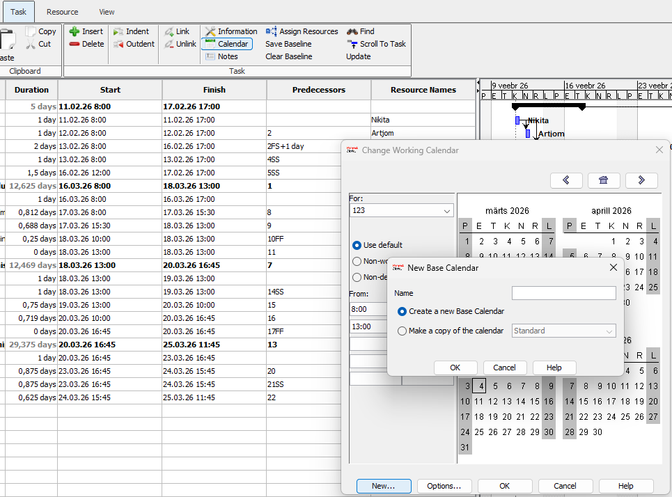
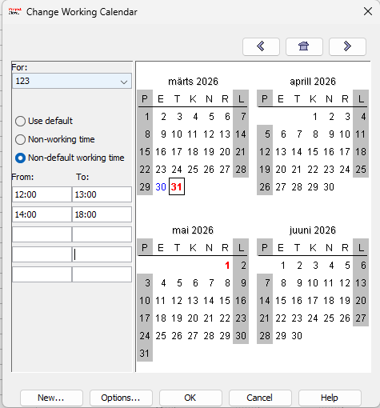
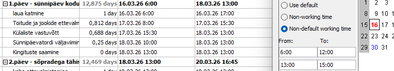

Uue kalendri loomine
Kalendri seadistamiseks vajutame ülemises menüüs nuppu Task ja seejärel valime Calendars. Avanevas aknas vajutame nuppu New, et luua uus kalender, ning sisestame sellele sobiva nime.

Tööaja ja erandite seadistamine
Valime loodud kalendri rippmenüüst (Dropbox). Seejärel klõpsame päeval, mille tööaega soovime muuta (näiteks riigipüha või nädalavahetus). Pärast muudatuste tegemist märgitakse muudetud päevad punase värviga.

Kalendri rakendamine projektile
Projekti seadistamiseks tuleb valida päevad, millele soovime määrata erandliku tööaja. Saame täpselt määrata, millal tööpäev algab ja lõpeb, et ProjectLibre saaks arvutada täpse projekti kestuse.

Miks on kalender oluline?
Õigesti seadistatud kalender on projekti planeerimise alus. See tagab, et ülesandeid ei planeerita puhkepäevadele ning et ressursside koormus ja projekti lõpptähtaeg on reaalsed ja täpsed.